|
As
Ramblin'
Rod
entered
the
1990s,
Rod
Ander's
youthful
looks
and
child-like
enthusiasm
belied
his
nearly
60
years.
The
show
and
its
host
would
continue
to
make
appearances
from
his
KPTV
studio
and
in
venues
around
Oregon.
It
seemed,
for
a
time,
as
if
"The
Ramblin'
Rod
Cartoon
Show"
would
go
on
forever.
|
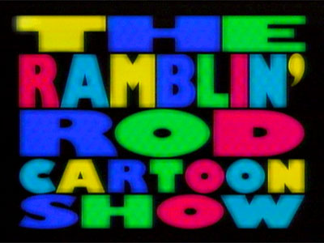 |
 |
|
Opening
titles
to
the
show,
mid-1990s. |
|
But,
nothing
is
forever.
The
cartoons
that
were
a
staple
of
Rod's
program
for
three
decades
were
quickly
becoming
the
exclusive
property
of
child-oriented
cable
networks.
With
fewer
animated
shorts
available
to
air,
less
time
could
be
filled,
and
KPTV
cut
"Ramblin'
Rod"
back
to
a
half-hour
in
1994.
The
children's
TV
market,
which
was
once
the
domain
of
locally-produced
shows,
was
now
divided
among
an
abundance
of
cable
channels.
Finding
kid-friendly
advertisers
to
fund
morning
TV
became
more
difficult,
and
stations
began
turning
to
local
news
to
fill
their
morning
schedules.
Struggling
to
compete
in
the
morning
news
arena,
KPTV
made
a
decision
that
would
spell
the
end
of
local
cartoon
shows
in
Portland.
In
the
late
summer
of
1996,
the
newly
re-branded
"Oregon's
12"
launched
"Good
Day
Oregon"
in
the
7:00-9:00am
time-period.
After
32
years
as
a
weekday
entry,
Rod
was
transplanted
to
a
sixty-minute
slot
on
Saturday
mornings.
|
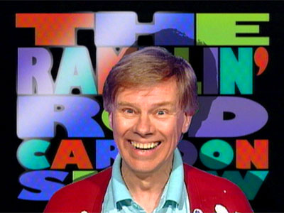 |
|
|
Ramblin' Rod greets his
viewers with a wide smile. |
|
Now
competing
against
both
cable
and
network
children's
programming,
"Ramblin'
Rod"
struggled.
Rod
Anders,
nearing
retirement
age,
and
increasingly
busy
with
other
interests
and
opportunities,
decided
the
time
had
come
to
say
goodbye.
On
Wednesday
March
26,
1997,
Ramblin'
Rod
taped
his
final
show.
Although
many
in
the
bleachers
that
day
were
relatives
and
old
friends,
Rod
had
kept
the
news
of
his
"retirement"
out
of
the
papers.
So
it
was
a
shock
to
many
in
attendance,
when
he
announced
that
this
would
be
his
final
show.
As
he
pushed
his
boat
off
stage
for
the
last
time,
a
teary-eyed
Rod
smiled
and
waved
to
a
sustained
standing-ovation
from
the
audience.
After
nearly
33
years,
presumed
to
be
a
record
for
a
local
children's
show
hosted
by
a
single
performer,
"The
Ramblin'
Rod
Cartoon
Show"
sailed
into
the
sunset.
|
|
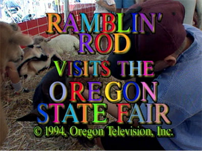
KPTV
took
the
show
on
the
road
to
the
Oregon
State
Fair
in
1994,
one
of
many
trips
Ramblin'
Rod
took
around
Oregon
during
the
show's
run.
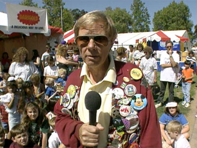
Even
dark
glasses
can't
disguise
Rod
from
his
adoring
fans
at
the
Oregon
State
Fair.
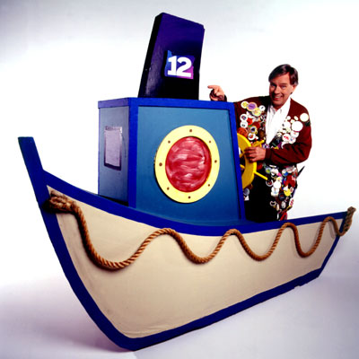
Rod's
trusty
boat,
sporting
a
new
paint
job
and
logo,
seems
to
be
in
better
shape
than
the
1960s
version,
perhaps
reflecting
the
growing
fortunes
of
KPTV's
owner,
Chris-Craft.
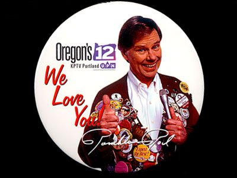
One
of
several
buttons
that
featured
Ramblin'
Rod,
created
in
1996
when
KPTV
became
"Oregon's
12."
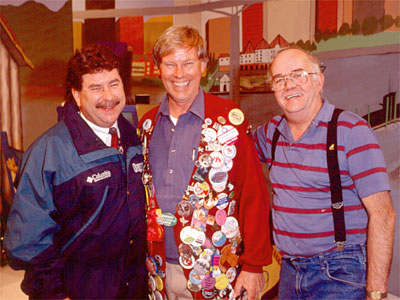
Ramblin'
Rod
with
two
of
his
long-time
friends,
"Uncle
Hunt"
Decker,
(left),
director
of
The
Ramblin'
Rod
Cartoon
Show,
and
"Uncle
Larry"
Neet,
floor
director
(the
guy
who,
among
other
things,
got
the
kids
to
wave
their
arms
and
cheer).
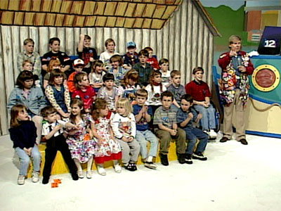
Guests
on
the
program,
on
the
Oregon's
12
version
of
the
set,
which
was
painted
to
match
the
Willamette
River
location
of
KPTV's
new
studios.
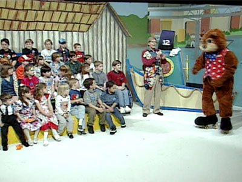
A
visit
from
"Chipper
the
Squirrel"
from
Oaks
Park
is
a
delight
to
kids
and
their
parents
alike.
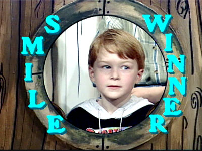
Three
decades
since
The
Ramblin'
Rod
Show
began,
and
it's
sill
all
about
children
smiling.
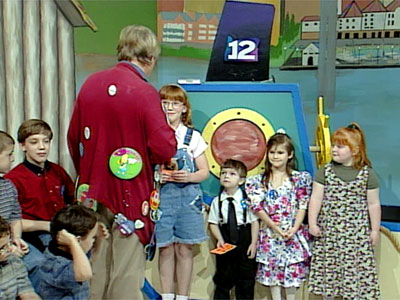
Ramblin'
Rod
greets
the
day's
birthday
guests.
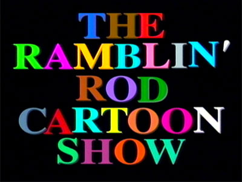
A
colorful
title
screen
appears
upon
returning
from
a
commercial
break.

Another
view
of
the
set.
Notice
the
Marquam
Bridge
and
downtown
Portland
behind
Rod's
boat.
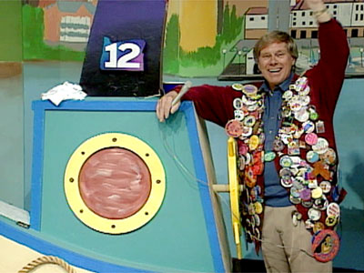
The
final
show:
"So
long,
everybody!!!!"
Ramblin'
Rod
waves
and
smiles
bravely,
but
viewers
can
tell
it's
a
sad
goodbye
to
the
children
he
has
loved
for
nearly
33
years.
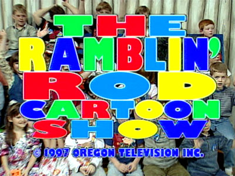
The
closing
titles
come
up
on
screen...
and
The
Ramblin'
Rod
Cartoon
Show
is
history.


This
page
last
updated
on
August 24, 2025